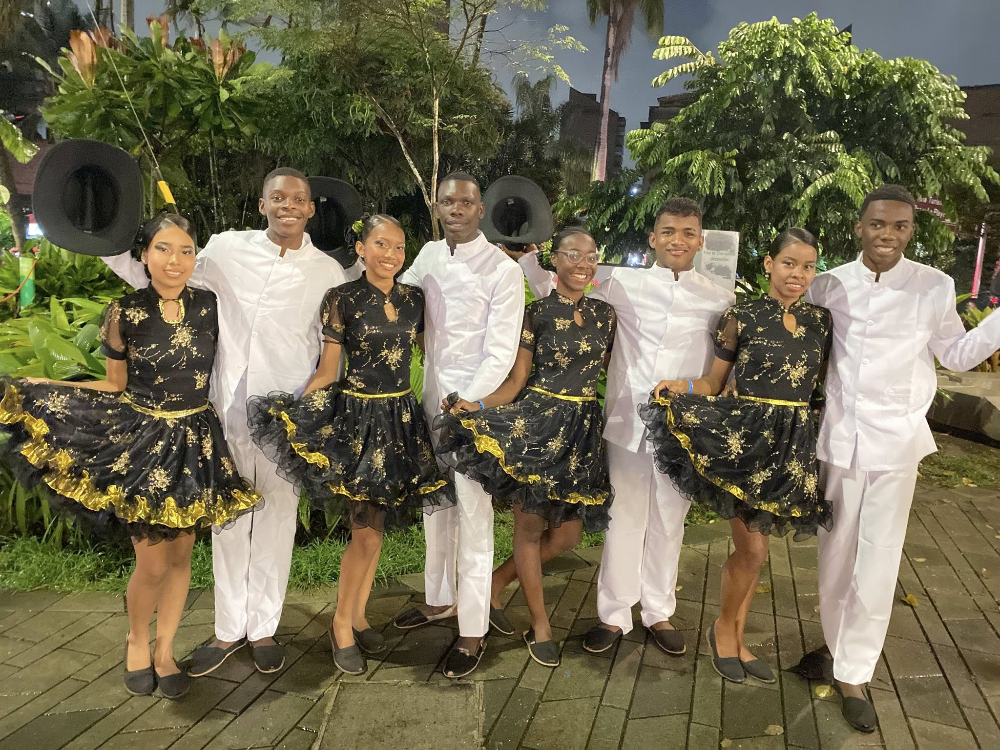
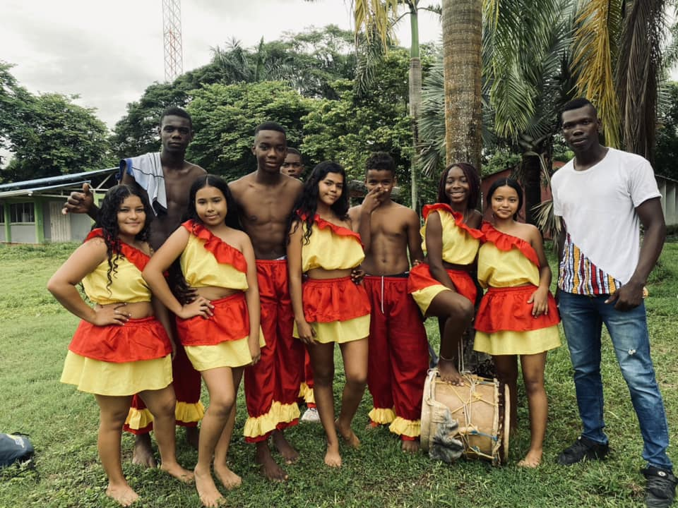
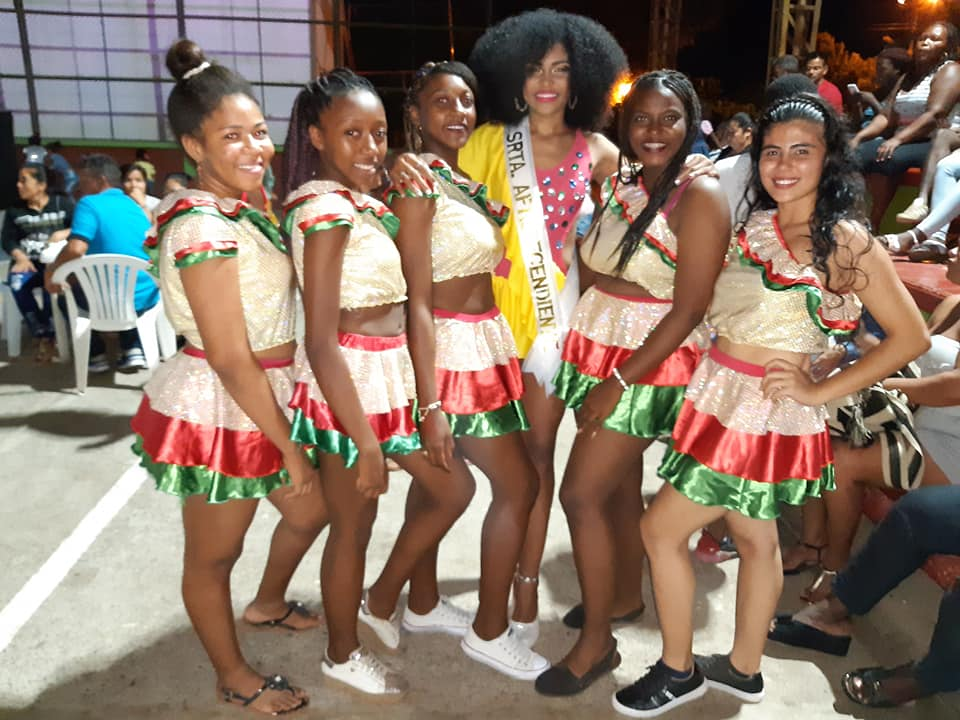
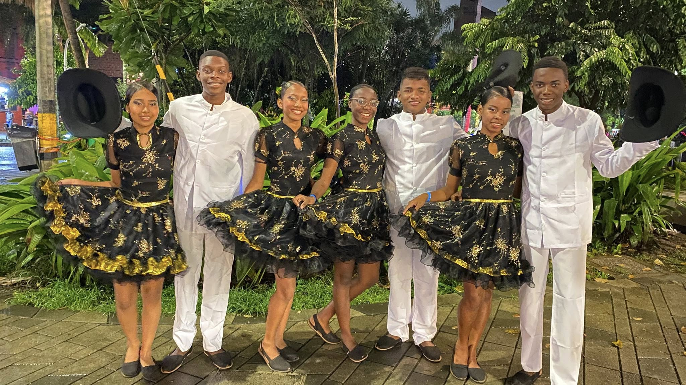
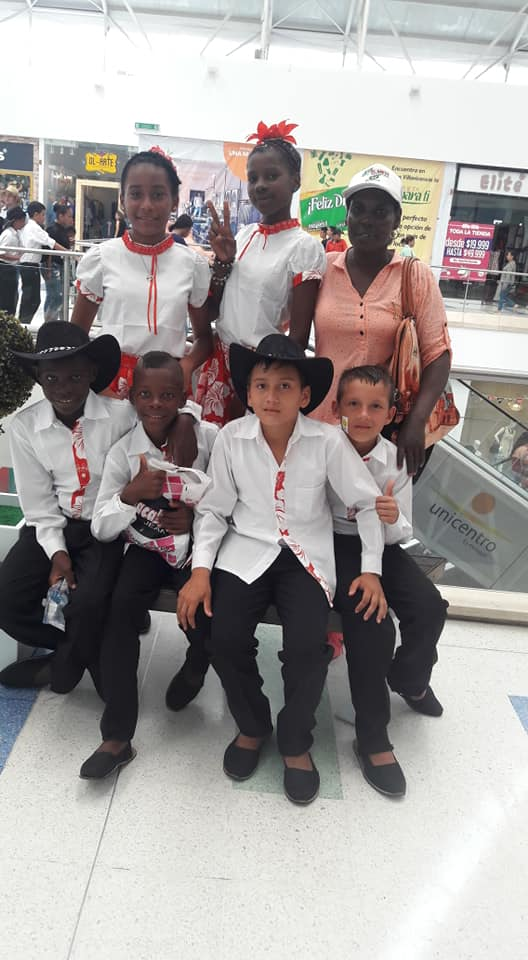
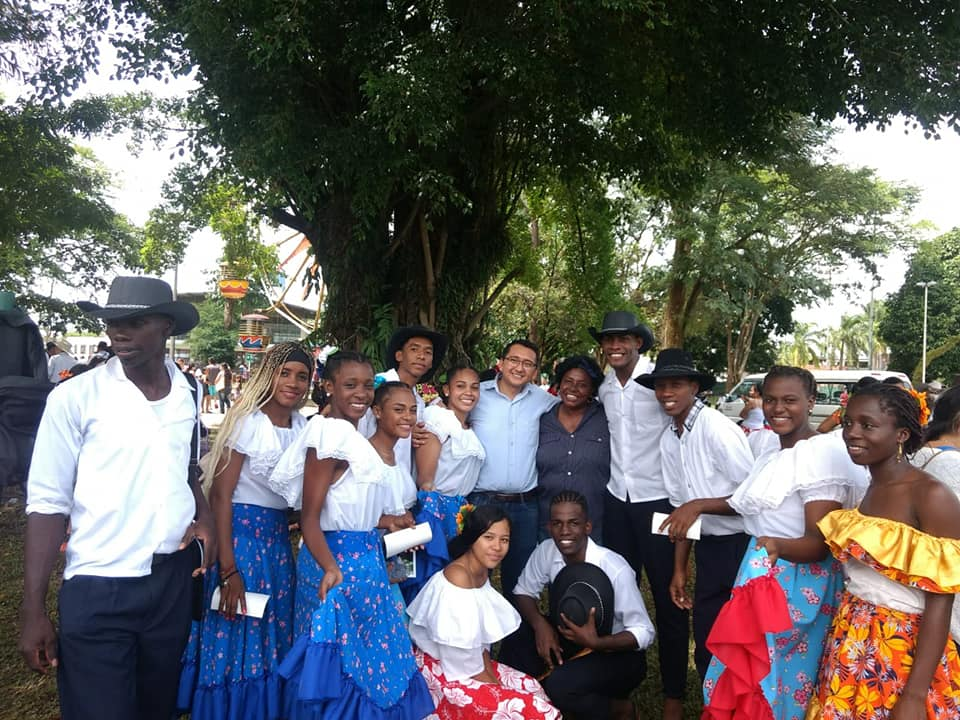

ATACAF ASOCIACIÓN
Raíz, liderazgo y acción comunitaria
Somos una organización sin ánimo de lucro que impulsa la cultura afrodescendiente, la educación y el desarrollo social con procesos que nacen desde la comunidad para la comunidad.
Cultura viva
Educación
Juventud
Territorio



Historia
ATACAF nació como respuesta comunitaria a necesidades sociales, educativas y culturales del territorio.
Misión
Promover el desarrollo integral mediante cultura, educación y proyectos sociales con enfoque étnico.
Visión
Consolidarnos como referente regional en procesos afrodescendientes de alto impacto comunitario.
Objetivos estratégicos
Compromisos principales con la comunidad.
Impulsar cultura
Fortalecer expresiones artísticas, identidad y memoria histórica afrodescendiente.
Educación
Crear rutas de formación para niñas, niños, jóvenes y liderazgos comunitarios.
Participación
Promover acciones colectivas con instituciones, familias y organizaciones aliadas.
Galería cultural ATACAF
Una selección visual de procesos comunitarios, memoria viva y expresiones artísticas. Haz click sobre cualquier imagen para abrirla completa.
Testimonios que inspiran
Voces de la comunidad que viven el impacto de ATACAF.

María C. Rentería
Lideresa comunitaria
“ATACAF nos devolvió el orgullo por nuestras raíces y hoy somos más visibles en el territorio.”

Kevin A. Mina
Joven participante
“Gracias a los talleres, encontré oportunidades para formarme y aportar a mi comunidad.”

Luz D. Palacios
Formadora cultural
“El proceso artístico nos une y fortalece la identidad de niñas, niños y jóvenes.”
Calendario de eventos
Talleres, festivales y convocatorias abiertas para la comunidad.
Taller de danza afro
Sesión formativa para jóvenes y semilleros artísticos.
RegistrarmeFestival cultural comunitario
Muestra abierta de música, danza y emprendimientos locales.
RegistrarmeConvocatoria de liderazgo juvenil
Inscripción para procesos de formación y liderazgo territorial.
RegistrarmeHistorias de impacto
Mini videos + resultados de procesos comunitarios destacados.
Escuela de danza comunitaria
Proceso formativo que fortaleció habilidades artísticas y liderazgo juvenil.
+80 jóvenes vinculados
12 presentaciones culturales
Fortalecimiento de identidad afro
Acciones pedagógicas para rescatar saberes ancestrales en familias y niñez.
+140 beneficiarios directos
9 jornadas territoriales
Explora las expresiones culturales de la comunidad
Consulta el archivo cultural dinámico para revisar registros de danza, memoria artística y procesos de participación comunitaria relacionados con ATACAF.